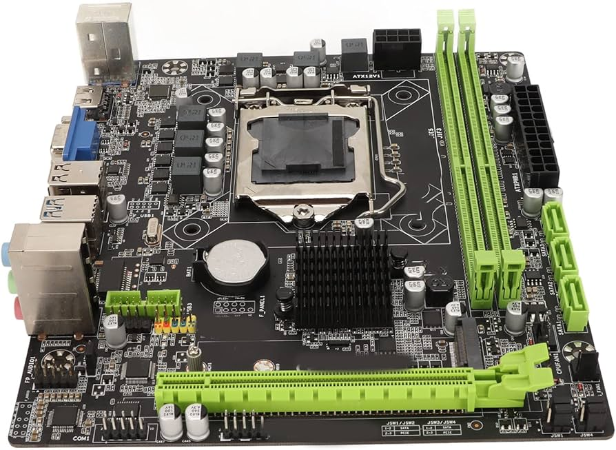
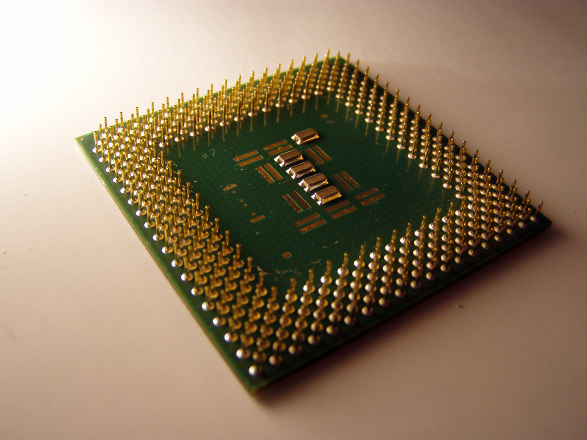
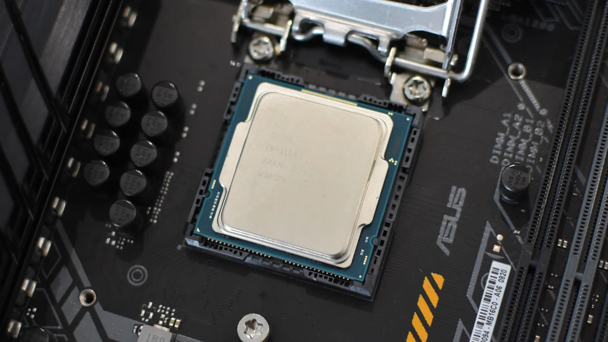
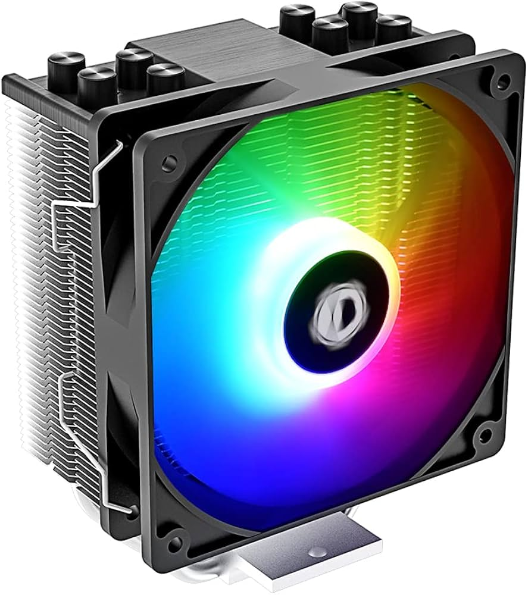
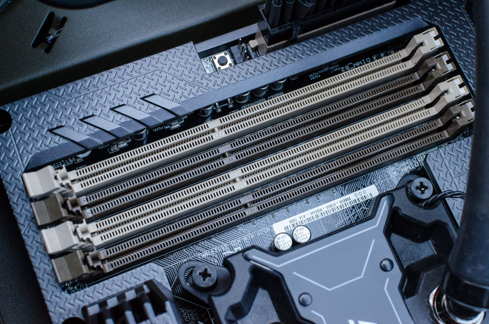
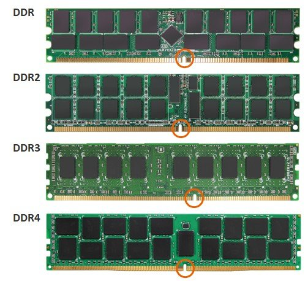
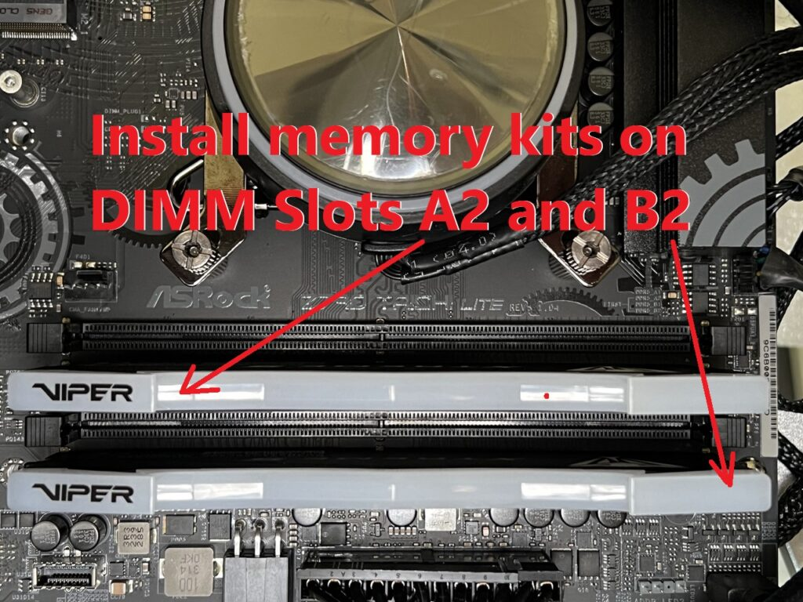

How to Build a Computer: Part 2
Materials Needed:
- A CPU (Central Processing Unit)
- A CPU cooler and thermal paste
- A motherboard compatible with your CPU
- A RAM kit compatible with your motherboard
Let's get started!
First, locate your motherboard.

A motherboard.
A motherboard.
Next, please locate your CPU.

A CPU.
A CPU.
Please now align the CPU to the socket by using the triangle on one corner and matching against the same spot on the motherboard.

Notice the small triangle in the corner of the CPU.
Notice the small triangle in the corner of the CPU.
Installing your CPU in the socket should ABSOLUTELY NEVER require force. EVER!!!!! If you do need to use force, you're doing it wrong and YOU WILL COMPLETELY BRICK YOUR MOTHERBOARD!!
If you do force it in, you are bending the pins inside the motherboard that contact your CPU and allow it to function. If you mess this up, your motherboard's warranty will NOT cover it.
Once you have done this, close the CPU socket by flipping down the cover and pushing down the lever. (this might require a very small amount of force).
Congratulations! You have installed your CPU.
Onwards we continue.
Time to install your CPU cooler and thermal paste.

The SE-214-XT by ID-COOLING.
The SE-214-XT by ID-COOLING.
First, apply a small dot of thermal paste a little smaller than a pea to the very center of your CPU. Then follow the instructions provided by your CPU cooler manufacturer to install it correctly.
Congratulations! You have installed your CPU cooler.
We shall now move on to your RAM, or Random Access Memory.
Locate the RAM sockets on your motherboard. They should look a little something like this:

RAM sockets on a motherboard. Notice that each slot is one of two colors.
RAM sockets on a motherboard. Notice that each slot is one of two colors.
Align the notch on the RAM stick with the bump in the RAM socket. THIS IS VERY IMPORTANT!! The RAM stick will not go into the socket if the notch and bump are not aligned.

The different locations of the notches on generations of RAM.
The different locations of the notches on generations of RAM.
If you have a 1 or 2 stick kit of RAM, place one in the 2nd RAM slot (usually specified in your motherboard manual) and the other in the 4th.
This allows the RAM to run in dualchannel mode, increasing transfer speeds and improving overall performance of your memory kit.

A nice graphic showing which slots to install your RAM in if you have a 2-stick kit.
A nice graphic showing which slots to install your RAM in if you have a 2-stick kit.
To install the RAM sticks, make sure that the notch is still aligned. Then push down the small latch(es) on the side(s) of the RAM slot. Place the RAM stick in the slot and push down on both ends with your thumbs.
Once you have done this, the latches should snap down automatically, locking the DIMM in place. If they don't, press harder. Repeat for the other DIMMs. If you have a 4-stick kit, simply place one DIMM in each slot.
Congratulations! You have installed your RAM.
Congratulations! You've done it!
You have now successfully partially assembled your computer.